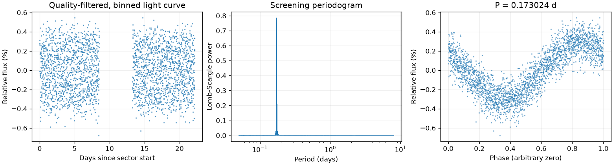
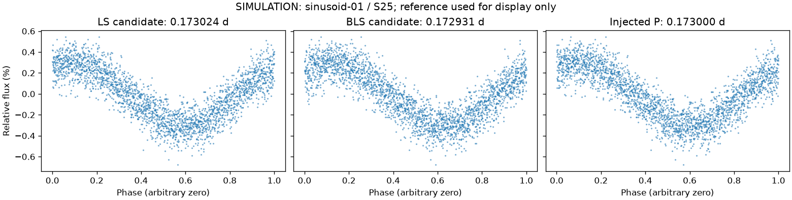
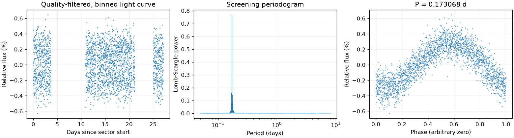
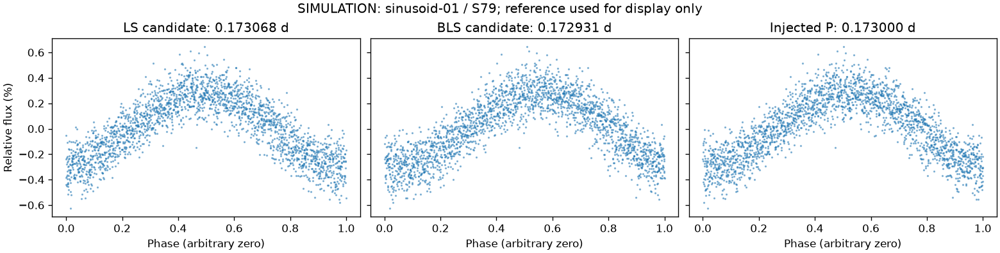

模拟：波浪形周期变化
这不是一颗真实恒星。仅观测时间取自真实数据，亮度由固定公式和随机种子生成。测量与模拟仪器通道均保存在输入 NPZ 中。
LS 候选：0.17302350 天；BLS 候选：0.17293086 天。

参考周期 0.17300000 天。LS：与参考相差小于 1%；BLS：与参考相差小于 1%。比较容差不是测量误差。

三图只改变摆放数据的周期。参考答案只用于此处解释，不曾输入周期搜索。
LS 候选：0.17306783 天；BLS 候选：0.17293086 天。

参考周期 0.17300000 天。LS：与参考相差小于 1%；BLS：与参考相差小于 1%。比较容差不是测量误差。

三图只改变摆放数据的周期。参考答案只用于此处解释，不曾输入周期搜索。